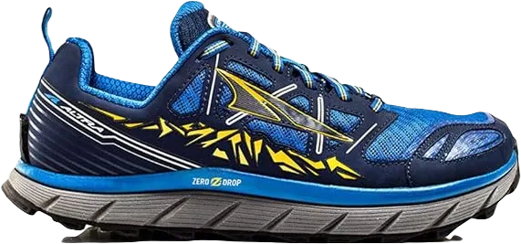

6 Best Shoes for Running on Grass 2024
Running is a vital exercise that offers numerous health benefits for everyone. According to cardiologists, just 5 to 10 minutes of daily running at a moderate pace can significantly reduce the risk of heart attacks, strokes, and various other common diseases.
Engaging in daily running not only helps build strong bones but also strengthens muscles, enhancing overall strength. Additionally, it improves cardiovascular fitness, burns a substantial amount of kilojoules, and aids in maintaining a healthy weight.
-
#1
ASICS Fujitrabuco 7 Gel Supergrip
.webp)
ASICS has specifically designed this shoe for individuals who run on grass. Its outsole is crafted from grippy rubber featuring deep, multidirectional tread patterns, ensuring a secure grip on soft, rugged surfaces like trails or grass. This design makes it an excellent choice for grass running, as the outsole also offers good abrasion resistance, enhancing the shoe's overall durability.
The midsole incorporates ASICS Flytefoam technology, providing excellent comfort while keeping the shoe lightweight. Additionally, Gel cushioning is used in the forefoot, complementing the Flytefoam midsole to deliver satisfactory energy return for effortless transitions during runs.
Moreover, the shoe features an Ortholite sock liner that acts as an effective underfoot cushioning layer while reducing moisture. This makes it suitable for users with sweaty feet, allowing them to wear the shoe comfortably for extended periods. -
#2
Adidas Rockadia men’s trail sneakers
.webp)
These shoes are currently considered the best option for running on trails or grass, allowing you to run confidently without the fear of slipping or losing balance.
The upper is constructed from breathable mesh material, enhancing comfort and ventilation. The tongue and collar are adequately padded to improve comfort and prevent any irritation. Additionally, the outsole features a dual-color design with a rugged texture, making it ideal for running on both trails and grass.
Now, let's dive into a detailed review of this shoe. The upper combines mesh with durable synthetic materials, increasing both durability and breathability. Its midsole utilizes Cloudfoam technology, Adidas's latest innovation that surpasses traditional EVA midsoles in durability, allowing for use on mountainous terrains without the worry of damaging the sole. -
#3
Nike zoom fly men’s shoes
.webp)
The Nike Zoom Fly is among the top choices for running on grass or uneven surfaces. Featuring React Foam technology, this shoe offers exceptional comfort and a plush, cushioned feel for runners.
The upper is crafted from Flyknit material, a new innovation by Nike, while the midsole incorporates a carbon fiber plate along with a super-soft cushioning layer. Additionally, the midsole is constructed from a highly durable material featuring hexagonal patterns that enhance grip, all while boasting a stylish appearance that complements casual outfits.
Now, let's delve into a detailed review of this shoe. The upper is a seamless one-piece design made from Flyknit technology, making it incredibly breathable. The rugged mesh material extends up to the ankle collar, wrapping around your ankle for a cozy and secure fit. The midsole features Nike's launch pad technology, utilizing a carbon fiber plate that facilitates a smoother run, giving you a sensation akin to running on clouds. -
#4
Asics Gel Cumulus 21
.webp)
The ASICS Gel Cumulus 21 is an outstanding choice for running, particularly on grass, offering a level of comfort unmatched by many other running shoes. It features ASICS' renowned AHAR rubber, ensuring durability and excellent grip while running on grassy surfaces.
The upper part of this shoe is constructed from jacquard mesh, which enhances breathability. The midsole incorporates FlyteFoam technology, delivering superior cushioning and effective shock attenuation. Additionally, the outsole is made from the well-regarded AHAR rubber, further enhancing the shoe's durability and providing excellent shock absorption.
Now, let’s delve deeper into this shoe's features. The upper, crafted from jacquard mesh, is not only extremely breathable but also provides a flexible feel, allowing for comfortable movement of the feet. This design ensures that runners can enjoy a more natural and unrestricted running experience. -
#5
ASICS GEL (Trail) Venture 5
.webp)
The ASICS Gel Venture features a new midsole designed for exceptional traction, particularly during tight turns. Priced reasonably, this shoe offers top-quality performance at an accessible cost, making it a must-consider option for anyone in search of a reliable running shoe.
The upper is crafted from synthetic material that is not only comfortable but also breathable, allowing runners to enjoy longer runs without the concern of sweaty feet. This thoughtful design enhances overall comfort during extended periods of activity.
The midsole incorporates EVA Foam technology, providing unparalleled comfort and support. Additionally, the outsole is constructed from ASICS' AHAR rubber, a cutting-edge material derived from car tire technology. This ensures high durability and excellent grip, making it ideal for various running conditions. -
#6
ALTRA LONE PEAK 3
The ALTRA LONE PEAK 3 is the latest iteration of Altra's original trail running shoes, specifically designed for a variety of activities including hiking, running, and trail running. These shoes are engineered to meet the needs of outdoor enthusiasts seeking performance and comfort.
The upper layer is crafted from quick-dry mesh, offering exceptional durability while ensuring breathability. This design feature allows runners to remain comfortable, as they won't have to worry about sweat accumulating around their feet during marathons or regular runs.
The midsole utilizes EVA technology to provide optimal comfort for the feet, while the A-Bound top layer further enhances this comfort. The outsole is made from Altra's MaxTrac sticky rubber, featuring TrailClaw lugs that improve grip on flat surfaces. This sticky rubber compound is particularly effective for climbing rocky terrains and navigating rough surfaces, making these shoes ideal for adventurous runners.